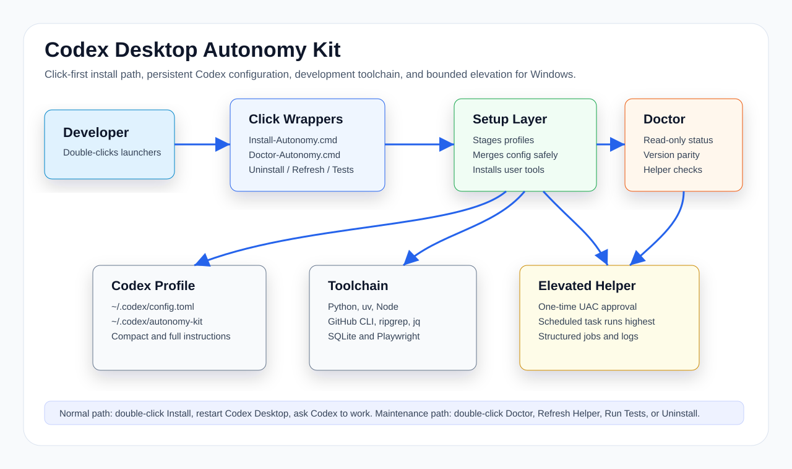

Configures Codex
Creates or refreshes a kit-managed ~/.codex/config.toml with autonomy-oriented settings and persistent developer instructions.
A click-first setup kit that configures Codex Desktop for practical local software-development autonomy: persistent instructions, full local development access, toolchain bootstrap, diagnostics, a bounded elevated helper, and a capability self-assessment rule that stops an agent inventing limits it never tested.
Creates or refreshes a kit-managed ~/.codex/config.toml with autonomy-oriented settings and persistent developer instructions.
Bootstraps common user-scope development tools: Python, uv, Node.js, GitHub CLI, ripgrep, jq, SQLite, and Playwright. Remote bootstrap scripts run only after release-pinned SHA-256 verification.
Optionally installs a scheduled-task helper so approved development infrastructure actions can run with administrator rights.
Installs a capability-check skill and a standing rule that make the agent probe what it can actually do instead of stopping to ask for permissions it already has.
Replaces config.toml only on an exact template match or explicit force. Customized settings — models, theme, plugins, hooks, project trust — are left untouched, byte-for-byte. Any overwrite records the exact backup and hash, and uninstall restores only that recorded backup.
Install-Autonomy.cmd. The installer runs setup, Doctor, and helper refresh checks.capability-check skill, and adds the capability rule to AGENTS.md. After restart, the kit is active through Codex Desktop configuration.
The most expensive failure of an autonomous coding agent is not a missing permission. It is inventing one, then halting to ask for access it already has. Prose does not fix this — a model can rationalize past an instruction.
The capability-check skill has the agent run real checks — test the path, attempt the write, try the command — rather than reasoning about what a sandbox probably allows.
A policy veto is a spelling problem: reformat and retry. A real limit — ACL, UAC, file lock, missing tool — gets named precisely. An imagined limit gets tested away.
The installer appends the rule to AGENTS.md inside markers, only if absent, backing up first. Content you wrote there is never rewritten.
config.toml only when the file is provably kit-owned — an exact match for the generated template, or an explicit -ForceConfig. A customized config, including one the kit created but you later edited, is left byte-for-byte unchanged, and a backup is taken before any overwrite. The elevated helper stays structured around named development actions with logs and result files.
People who want Codex Desktop to finish local setup, builds, tests, and repairs without turning every task into a checklist.
Users who need practical Windows support for services, SDKs, firewall rules, installers, and development tooling.
People who want a documented pattern for no-CLI install, diagnostics, uninstall, versioned manifests, and regression tests.